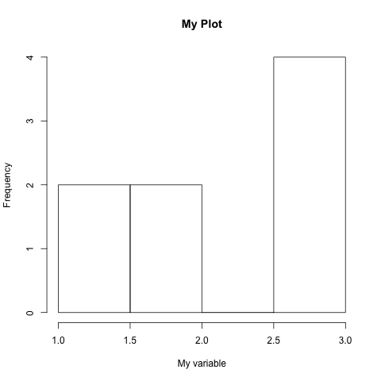

R语言基本设置与操作
1 基本设置
1.1 安装和使用包
install.packages("foreign") library(foreign)
1.2 设置工作目录
setwd("~/Downloads/rproject/presention") getwd()
1.3 基本运算
2 + 2 ## 加 9 - 4 ## 减 6 * 12 ## 乘 86 / 4 ## 除 2 ^ 8 ## 次方 log(12) ## 自然对数 exp(2) ## e的指数 2 / 9 ^ 2 == 2 / 81 2 / 9 ^ 2 == (2/9) ^ 2
2 获取帮助
2.1 R 语言自带帮助系统
??mean ?mean
2.2 网上搜索
- Stack Overflow http://stackoverflow.com/questions/tagged/r
- Quick R http://www.statmethods.net/
- 拷贝报错信息，Google，一般都能查到解决问题的办法！
3 创建数据对象
3.1 单个元素的对象（整数、小数、字符串、逻辑符号）
integer_obj <- 4 ## 整数 numeric_obj <- 4.39053 ## 实数 string_obj <- "This is a string" ## 字符串 logical_obj <- TRUE ## 逻辑符号
3.2 多个元素组成的对象
- 向量
vector_of_integers <- c(3, 9, 10, 4) vector_of_integers vector_of_numerics <- rep(4.39024, 10) # rep函数赋值 vector_of_numerics sequentialvec <- 1:10 #冒号赋值 backwardssequence <- 10:1 seqvec2 <- seq(0, 50, 10) #seq函数赋值 sequentialvec backwardssequence seqvec2
- 向量的运算
vector_of_integers - 2 * vector_of_integers vector_of_integers
- 向量中元素的选择
vector_of_integers vector_of_integers[1] vector_of_integers[2:4] # 求平均值 mean_of_vector_of_integers <- mean(vector_of_integers) mean_of_vector_of_integers
- 练习：创建一个包含100到200之间所有整数的向量seq12，求其平均值，并赋值给mean12
seq12 <- seq(100,200,1) mean12 <- mean(seq12) mean12
- 矩阵
- 采用向量创建矩阵
vector_of_integers two_by_two_matrix <- matrix(vector_of_integers, nrow=2, ncol=2) two_by_two_matrix- 选择特定的矩阵元素
two_by_two_matrix[1,2] two_by_two_matrix[,2] two_by_two_matrix[,1]
- 矩阵加法、矩阵按元素相乘、矩阵乘法
two_by_two_matrix + two_by_two_matrix two_by_two_matrix * two_by_two_matrix two_by_two_matrix %*% two_by_two_matrix
4 布尔运算
2 == 2 ## 相等，注意 == 代表布尔运算，= 代表赋值 2 != 2 ## 不相等 4 > 2 ## 大于 4 >= 2 ## 大于或等于 2 < 4 ## 小于 2 <= 4 ## 小于或等于 !(4 > 2) # 返回 FALSE 2==2 & 4==2 ## 采用&和|来连接布尔运算 2==2 | 4==2 c(3,5,2,0,-4,-5) > 0 full <- state.name ## R has built in state names! full[1:10] pacstates <- c("Washington", "Oregon", "California", "Alaska", "Hawaii") !(full %in% pacstates)[1:10] full[!(full %in% pacstates)]
5 函数
mean(c(2,3,10,3,NA), na.rm = TRUE) mean(x = c(2,3,10,3)) # mean takes one argument, x
5.1 自定义函数
add_2 <- function(x){ k <- x + 2 # 加 2 return(k) # 返回 k } adding_2_to_6 <- add_2(6) adding_2_to_6
5.2 练习：编写函数对向量元素进行开3次幂并除以自然对数的计算，并返回值
example <- function(x){ return(x^(1/3) / log(x)) } example(5:10)
6 条件执行
x <- 1000000 if(x > 10000){ "x is a really big number" } if(x < 10000){ "x isn't that big" } x <- 1 if(x > 10000){ "x is a really big number" } else{ "x isn't that big" } ifelse(x > 10000, "x is a really big number", "x isn't that big") y <- "Math!" if(!is.numeric(y)) { "y isn't even a number" } else if(y == 10000){ "y equals 10000" } else if(y > 10000){ "y is really big" } else{ "y isn't that big" } ifelse(!is.numeric(y), "y isn't even a number", ifelse(y == 10000, "y equals 10000", ifelse(y > 10000, "y is a really big number", "y isn't that big")))
7 重复与循环
for(i in 1:5){ print(i) }
for(i in seq(1,5)){ print(i) } index <- c("look", "how", "fancy", "we", "can", "be", "with", "loop", "indexes") for(i in index){ print(i) } for(i in 1:10){ for(j in 50:60){ ## some sort of code... } }
8 数据框与数据导入
- 设定工作目录
setwd("你的数据文件所在目录")
- 读入数据
houses_data <- read.table(file = "houses.txt", header = T, sep = "\t")
- 数据框的操作
head(houses_data) houses_data$PRICE[1:20] houses_data[houses_data$SQFT > 2500,][1:5,] names(houses_data) houses_data[1:10,1] sq.ft.price <- NULL # 创建一个对象 for(i in 1:10000){ sample.data <- houses_data[sample(1:nrow(houses_data), 100),] price.persqft <- sample.data$PRICE / sample.data$SQFT # 建立代表单位面积价格的变量 sq.ft.price[i] <- mean(price.persqft) # 将每个样本均值存入向量 } hist(sq.ft.price)
9 绘图
- 直方图
hist(c(1,1,2,2,3,3,3,3), main = "My Plot", xlab = "My variable")

- 散点图
plot(x = c(1,2,3,4,5), y = c(4,2,0,1,4), col = "Red", xlab ="x",ylab = "y", pch = 18) ## 点的形状

- 导出图像
pdf("plot_output.pdf") # 打开 hist(c(1,1,2,2,3,3,3,3), main = "My Plot", xlab = "My variable") dev.off() # 关闭